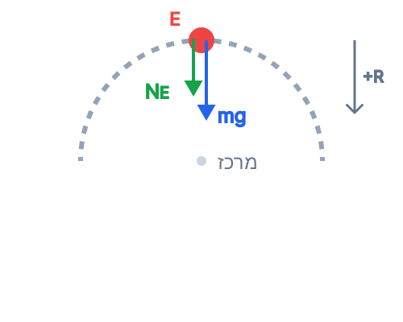
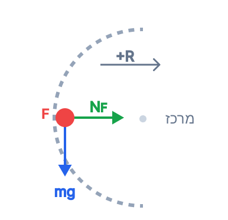

סעיף א'
הגוף משוחרר ממנוחה מנקודה A, לכן גודל מהירותו ההתחלתית הוא \( v_A = 0 \). הגוף מגיע לנקודה E, שהיא בראש המעגל. קוטר המעגל הוא פעמיים הרדיוס, לכן גובה הנקודה E מעל C הוא \( h_E = 2r = 2 \cdot 0.4 = 0.8 \text{ m} \). המסילה חסרת חיכוך.
אנו מתבקשים לחשב את הכוח (גודל וכיוון) שהמסילה מפעילה על הגוף בנקודה E. כוח זה הוא הכוח הנורמלי, ונסמנו \( N_E \).
חוק שימור אנרגיה מכנית ומרכיביה (לחלופין: משפט עבודה-אנרגיה).
ד. הצבה ופתרון:
ראשית, נמצא את האנרגיה המכנית בנקודה A. מכיוון שהגוף ממנוחה, יש לו רק אנרגיה פוטנציאלית כובדית:
האנרגיה המכנית נשמרת ולכן בנקודה E האנרגיה הכוללת שווה ל- \( 2.4 \text{ J} \). בנקודה E יש לגוף מהירות \( v_E \) וגובה \( h_E = 0.8 \text{ m} \):
כעת, נשרטט תרשים כוחות (FBD) על הגוף בנקודה E (הנקודה הגבוהה ביותר בלולאה). על הגוף פועלים שני כוחות: כוח הכובד \( mg \) כלפי מטה, והכוח הנורמלי \( N_E \) שהמסילה מפעילה עליו, שגם הוא מכוון כלפי מטה (פנימה אל מרכז המעגל).

נבחר ציר רדיאלי חיובי כלפי מטה (אל מרכז המעגל). נרשום את משוואת התנועה בציר הרדיאלי לפי החוק השני של ניוטון:
נציב את הנתונים ואת \( v_E^2 \) שמצאנו:
סעיף ב'
ידוע כי המסילה היא חסרת חיכוך לאורך כל הדרך.
הסבר מדוע האנרגיה המכנית הכוללת של הגוף נשמרת במהלך תנועתו, תוך התייחסות מפורשת לעבודת הכוח הנורמלי.
משפט עבודה-אנרגיה, הקובע שעבודת הכוחות הלא-משמרים שווה לשינוי באנרגיה המכנית הכוללת.
ד. הצבה ופתרון:
הכוחות הפועלים על הגוף במהלך תנועתו הם כוח הכובד (שהוא כוח משמר) והכוח הנורמלי (שהוא כוח לא משמר). מכיוון שאין חיכוך, אין כוחות לא משמרים נוספים.
הכוח הנורמלי תמיד מאונך (ניצב) למשטח המסילה, ולכן בכל רגע הוא ניצב לכיוון ההעתק של הגוף (ולווקטור המהירות). לפי הגדרת העבודה, הזווית בין הכוח להעתק היא \( \theta = 90^\circ \).
מכיוון שעבודת הכוח הנורמלי אפס ועבודת החיכוך אפס, סך העבודה של הכוחות הלא משמרים היא אפס (\( W_{\text{nc}} = 0 \)), ולכן על פי משפט עבודה-אנרגיה, האנרגיה המכנית הכוללת נשמרת.
סעיף ג'
הגוף נע מנקודה C (התחתית, גובה מינימלי) לנקודה E (הפסגה, גובה מקסימלי).
הסבר מדוע מהירות הגוף הולכת וקטנה (גודל המהירות קטן) במהלך תנועתו מ-C ל-E.
חוק שימור אנרגיה מכנית ומרכיביה.
ד. הצבה ופתרון:
כפי שהוכחנו בסעיף הקודם, האנרגיה המכנית הכוללת של המערכת (\( E_k + U_G \)) נשארת קבועה. במהלך התנועה מנקודה C לנקודה E, הגוף עולה בגובה. לכן, האנרגיה הפוטנציאלית הכובדית שלו (\( U_G = mgh \)) הולכת וגדלה.
כדי שסכום האנרגיות יישאר קבוע, גידול באנרגיה הפוטנציאלית מחייב ירידה שווה באנרגיה הקינטית (\( E_k = \frac{1}{2}mv^2 \)). מכיוון שהמסה קבועה, ירידה באנרגיה הקינטית משמעותה הקטנה של גודל המהירות (\( v \)).
סעיף ד'
אנו בוחנים כעת את נקודה F. גובה הנקודה F מעל תחתית המעגל הוא רדיוס אחד, כלומר \( h_F = r = 0.4 \text{ m} \). האנרגיה הכוללת במערכת נותרה \( E = 2.4 \text{ J} \).
יש לחשב את הכוח (גודל וכיוון) שהגוף מפעיל על המסילה בנקודה F.
נשתמש שוב בשימור אנרגיה למציאת המהירות \( v_F \), בחוק השני של ניוטון בציר הרדיאלי למציאת הכוח הנורמלי, ובהחוק השלישי של ניוטון ("פעולה ותגובה") כדי לענות במדויק על השאלה.
ד. הצבה ופתרון:
נמצא את מהירות הגוף בנקודה F לפי שימור אנרגיה מנקודה A:
כעת, נצייר תרשים כוחות (FBD) על הגוף בנקודה F (הקצה השמאלי האופקי של הלולאה). כוח הכובד פועל כלפי מטה, והכוח הנורמלי מופעל על ידי המסילה לכיוון ימין (פנימה למרכז המעגל).

בנקודה זו, כוח הכובד משיק למסלול (אינו תורם לתאוצה הרדיאלית). הכוח היחיד שפועל בכיוון הרדיאלי (למרכז המעגל) הוא הכוח הנורמלי \( N_F \). נרשום את משוואת התנועה בציר הרדיאלי לפי החוק השני של ניוטון:
נציב את הנתונים:
מצאנו שהמסילה מפעילה על הגוף כוח של \( 8 \text{ N} \) שמאלה (כלפי פנים המעגל). על פי החוק השלישי של ניוטון, הגוף מפעיל על המסילה כוח שווה בגודלו והפוך בכיוונו.
סעיף ה'
במקרה חדש, משחררים גוף מנקודה B הנמצאת בגובה \( h_B = 0.9 \text{ m} \) (מעל נקודה C). הוא משוחרר ממנוחה, לכן \( v_B = 0 \).
האם הגוף מגיע לנקודה E (שגובהה \( 0.8 \text{ m} \))? יש לנמק. אם כן, לחשב את המהירות בנקודה E.
על מנת שגוף ישלים סיבוב בלולאה אנכית (או יגיע לפסגה מבלי ליפול פנימה), עליו להישאר במגע עם המסילה. התנאי לכך הוא שהכוח הנורמלי יהיה חיובי (או במקרה הגבולי - אפס).
ד. הצבה ופתרון:
נחשב תחילה את האנרגיה ההתחלתית בנקודה B:
כעת עלינו להבין מהם התנאים להגעת הגוף לנקודה E. בכדי שהגוף יגיע לנקודה E (שיא הלולאה), התנאי ההכרחי הוא שהגוף לא יתנתק מהמסילה ויישאר בתנועה מעגלית. בכדי להישאר בתנועה מעגלית בנקודה העליונה, הגוף חייב לנוע עם מהירות מינימלית כלשהי כדי לקיים את התאוצה הרדיאלית הנדרשת כלפי מרכז המעגל. המסקנה היא שהאנרגיה המכנית בנקודה E חייבת להיות מורכבת גם מאנרגיה פוטנציאלית כובדית וגם מאנרגיה קינטית מינימלית.
נבדוק כעת מהי המהירות המינימלית הדרושה לכך שהגוף לא יתנתק מהמסילה. המצב המינימלי (הגבולי) מתרחש כאשר הגוף כמעט ועוזב את המסילה, ולכן המסילה כבר לא "דוחפת" אותו, כלומר הכוח הנורמלי מתאפס (\( N_E = 0 \)). ממשוואת כוחות בציר רדיאלי (כמו בסעיף א'):
נציב ונמצא את ריבוע המהירות המינימלית הנדרשת בנקודה E:
כעת נחשב מהי האנרגיה המינימלית הנדרשת במערכת כדי שהגוף יהיה בנקודה E עם המהירות המינימלית הזו:
מכיוון שהאנרגיה שיש לגוף מנקודה B (\( E_B = 1.8 \text{ J} \)) קטנה מהאנרגיה המינימלית הנדרשת להשלמת המסלול המעגלי עד הנקודה העליונה (\( 2.0 \text{ J} \)), לגוף אין מספיק אנרגיה. לפני הגעתו לנקודה E, הכוח הנורמלי יתאפס והגוף ייפול מתוך המסלול המעגלי בתנועת זריקה משופעת.
בתנועה מתוך לולאה מעגלית פתוחה, הגוף לא יכול להגיע לנקודה העליונה במהירות אפס, כי כוח הכובד מושך אותו למטה. הוא חייב שתהיה לו מהירות מינימלית נדרשת שתיצור תאוצה רדיאלית המתגברת על ה"נפילה". תמיד בדקו את תנאי המהירות המינימלית בשיא הלולאה (\( v \ge \sqrt{gr} \))!
סימולציית תנועת הגוף (שחרור מנקודה B)
צפו בגוף משתחרר מגובה 0.9 מטר, מאיץ במורד, מתנתק מהלולאה בנקודה שבה הכוח הנורמלי מתאפס, ונופל לקרקע בתנועת זריקה משופעת.